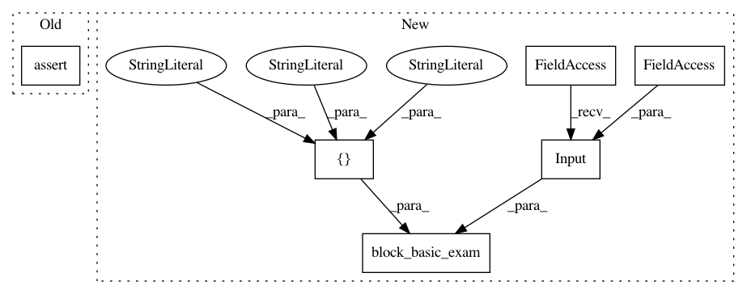

2e3ecf5ad4817912b14f8e17625aaa24185081c6,tests/autokeras/hypermodels/basic_test.py,,test_rnn_block,#,66
Before Change
block.build(hp, ak.Input(shape=input_shape).build())
assert utils.name_in_hps("bidirectional", hp)
assert utils.name_in_hps("layer_type", hp)
assert utils.name_in_hps("num_layers", hp)
def test_dense_block():
After Change
def test_rnn_block():
utils.block_basic_exam(
basic.RNNBlock(),
tf.keras.Input(shape=(32, 10), dtype=tf.float32),
[
"bidirectional",
"layer_type",
"num_layers",
])
def test_dense_block():
utils.block_basic_exam(
In pattern: SUPERPATTERN
Frequency: 3
Non-data size: 6
Instances
Project Name: keras-team/autokeras
Commit Name: 2e3ecf5ad4817912b14f8e17625aaa24185081c6
Time: 2020-05-20
Author: jin@tamu.edu
File Name: tests/autokeras/hypermodels/basic_test.py
Class Name:
Method Name: test_rnn_block
Project Name: keras-team/autokeras
Commit Name: 2e3ecf5ad4817912b14f8e17625aaa24185081c6
Time: 2020-05-20
Author: jin@tamu.edu
File Name: tests/autokeras/hypermodels/basic_test.py
Class Name:
Method Name: test_xception_block
Project Name: keras-team/autokeras
Commit Name: 2e3ecf5ad4817912b14f8e17625aaa24185081c6
Time: 2020-05-20
Author: jin@tamu.edu
File Name: tests/autokeras/hypermodels/basic_test.py
Class Name:
Method Name: test_conv_block